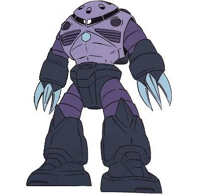

| MSM-07 Z'Gok Marine Combat Amphibious Zeon Duchy Mobile Suit |
|
|  | |
General and Technical Data |
|
|
Model number: MSM-07 Code name: Zugock Unit type: mass production amphibious mobile suit Operator: Zeon Duchy Dimensions: head height 18.4 meters Weight: empty 65.1 metric tons; max gross 96.4 metric tons Construction: super high-tensile steel Powerplant: Minovsky type ultracompact fusion reactor, output rated at 2480 kW Propulsion: hydrojet thrusters, 2 x 35000 kg; rocket thrusters, 2 x 22000 kg Performance: thruster acceleration 0.86 G; maximum water speed 103 knots; maximum ground running speed 99 km/h Equipment and design features: sensors, range 5200 meters; interchangable forearm weapon systems Fixed armaments: 6 x 240mm missile launcher, 5 round magazine per launcher, mounted in head; 2 x mega particle cannon, mounted in forearms; 6 x claw, sharpened melee weapon, 3 per arm Magnetic Storage Racks: 0 |
|
| Technical and Historical Notes | |
|
The Zimmad and Zeonic corporations both viewed the Zeon Duchy's Marine Mobile Suit program as a sort of competition ground for their engineers; this dichotomy allowed the MIP Company, whose designs for a space fighter had been smashed out by the earlier Zeonic mobile suits, to get in the competition. MIP's entry was dramatically different from both earlier designs; it was built more like a conventional land mobile suit, and intended to be at home in either environment.
The MSM-07 Z'gok is radically different from any other marine mobile suit. Though it does have most of the trademark features of marine mobile suits (built-in weaponry, claw melee weapons), it has many features of land combat mobile suits, including a high ground running speed and jumpjet capability, as well as a somewhat standard frame design. Additional thrusters in its feet provide it with greater land mobility than the portly Gogg. A hefty supply of rocket and hydrojet engines give it unparalleled maneuverability and speed while underwater, and it can compete with the MS-07 Gouf on land due to its high reaction time. A large reactor gives it a powerful shot to its weaponry and a high refire rate. It too has a 360 degree mono-eye, but hardly any head to speak of; what might be interpreted as one is sunken into its shoulders. As it has much more conventional joints than typical marine mobile suits, its are covered with the same flexible, watertight material that the original Zaku Marine Types used.
The Zugock sports a mega particle cannon in each arm, offset by three claws; the lesson from the Gogg about the inability to aim torso-mounted guns was learned on the Acguy and it continues with the Zugock. Six missile launchers were mounted in its head for ranged bombardment or attacks on enemy warships while underwater. Keeping with tradition, the Zugock has sharp claws for melee combat or attacking ship hulls.
|
 RPG quick stats sheet
RPG quick stats sheet | Weapons and Features | |

Gogg/Z'Gok Cockpit |
|